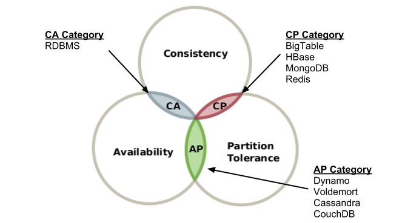
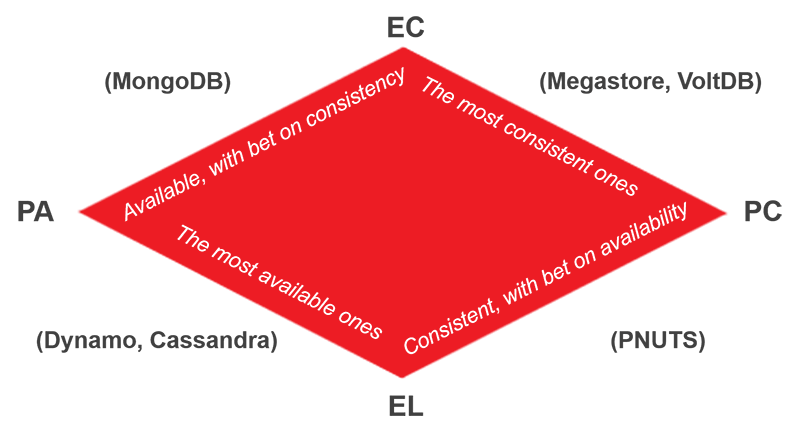

Cap 이론과 Pacelc 이론
CAP 이론은 분산 데이터베이스 시스템에서 의미있는 이론이다. 분산 데이터베이스의 세 가지 속성인 일관성(Consistency), 가용성(Availability), 네트워크 파티션 허용(Partition tolerance)을 나타낸다. 처음 CAP 이론이 발표된 후, 시간이 지나면서 이론의 허점이 발견되었고 이를 보완하는 PACELC 이론이 나오게 된다.
분산 모델 기초
보통 분산 데이터베이스를 보면, 기본적으로 Replication과 Sharding을 지원하고 있다. Replication 기능 덕분에 특정 DB 노드에 장애가 발생해도 다른 노드에 복제된 데이터가 존재해서 안정성을 높인다. 또는 Read DB, Write DB로 역할을 나워서 부하 분산 효과를 얻기도 한다. 그리고 Sharding을 통해서 데이터를 각 DB 노드에 나눠서 저장하면 이 또한, Replication로 얻을 수 있는 분하 분산, 안정성 등의 효과를 얻을 수 있다.
일관성(Consistency)
모든 요청은 최신 데이터 또는 에러를 응답받는다. 일관성 있는 시스템은 무엇일까? DB가 A, B, C 노드로 분산되어 있는 환경을 생각해보자. A 노드에 돈 1000원이 저장되어 있는데, 이것을 2000원으로 변경했다. 그럼 이 변경사항은 Replication 기능에 의해 B, C 노드에도 반영될 것이다. 하지만, 상식적으로 A 노드의 변경사항이 B, C 노드까지 전달되기에는 시간이 필요하다. 이때, B나 C 노드에 접근한 유저를 변경사항이 완전히 반영될때까지 기다리게 하면 최신 데이터인 2000원을 반환할수 있게 된다. 이는 일관성 있는 시스템이라고 할 수 있다.
가용성(Availability)
모든 요청은 정상 응답을 받는다. 앞에 설명한 DB 환경에서 계속 생각해보자. B 노드에 장애가 발생해서 서비스를 할 수 없게 되었다. 하지만, A, C 노드는 살아 있어서 A, C 노드로 계속해서 유저에게 서비스를 한다면, 가용성 있는 시스템이라고 할 수 있다. 하지만, 이렇게 가용성을 챙긴다면 일관성은 유지가 될까?
네트워크 파티션 허용(Partition tolerance)
노드간 통신이 실패하는 경우라도 시스템은 정상 동작 한다. 네트워크 장애가 일어나는 것을 인정하느냐를 묻는다. 네트워크 장애로 B 노드가 A, C 노드와 연결이 되지 않아 Replication이 제대로 이루어지지 않을 때, A, C 노드와 B 노드는 데이터가 서로 다를 것이다. 그럼에도 서비스를 계속 한다면, 이는 가용성있는 시스템이라고 할 수 있다. 하지만 일관성은 깨진 시스템이다. 그렇다고 일관성을 유지하기 위해 네트워크 장애가 해소될때까지 기다린다면 가용성이 떨어지게 된다.
CAP 이론
아래의 그림을 보자. CAP 세 가지 속성을 모두 만족하는 부분은 존재하지 않는다. 즉, 분산 시스템에서 이 세가지 속성을 모두 만족하는 것은 불가능하며, 오직 2 가지만 만족할 수 있다로 정리된다. 
CAP 이론의 허점
앞선 내용으로 우리가 동시에 가질 수 있는 CAP 속성은 CP, AP, CA 이렇게 세 가지로 나눌수 있다.
CP 시스템
완벽한 일관성을 갖는 분산 시스템에서 데이터 변경은 존재하는 모든 노느에 복제되어야 완료된다. 이는 가용성과 성능에 크나큰 악영향을 끼친다. 만약 하나의 노드라고 문제가 있으면 트랜잭션은 실패한다. 그리고 노드가 늘어날 수록 지연시간은 길어진다.
AP 시스템
완벽한 가용성을 갖는 분산 시스템에서는 모든 노드가 어떤 상황에서도 응답할 수 있어야 한다. 네트워크 문제가 발생해서 어떤 노드에 Replication이 제대로 이루어지지 않아도 가용성을 위해서 해당 노드에 접근한 사용자에게 데이터를 반환한다고 생각해보자. 일관성이 깨진 것은 당연하고 사용자는 문제가 발생한 것을 인지도 못할 것이다.
CA 시스템
일관성과 가용성을 동시에 완벽히 만족하려면, 네트워크 장애를 허용하지 않아야 한다. 네트워크 장애가 절대 일어나지 않는 네트워크 구성이 가능할까? 그런 것은 이 세상에 존재하지 않는다. 결국 CAP 이론은 네트워크 파티션 허용은 기본적으로 깔고 시작해야 한다. 무조건 P를 선택하고, C와 A 중 하나를 골라야 한다. 하지만, 앞서 설명한 CP, AP 시스템도 뭔가 답답하다. 어느 한쪽을 완벽히 만족하는 시스템을 구축하는 것이 아니라 일관성과 가용성을 서비스 목적에 맞게 균형잡힌 시스템을 가지고 싶다.
PACELC 이론
PACELC 이론은 CAP 이론으로 부족한 부분을 보완하기위해 네트워크 장애 상황과 정상 상황으로 나누어서 설명하는 이론이다. 아래의 그림을 보자. P(네트워크 파티션)상황에서 A(가용성)과 C(일관성)의 상충 관계와 E(else, 정상)상황에서 L(지연 시간)과 C(일관성)의 상충 관계를 설명한다.  PACELC 이론에서는 장애 상황, 정상 상황에서 어떻게 동작하는지에 따라 시스템을 PC/EC, PC/EL, PA/EC, PA/EL로 나눌 수 있다. MySQL을 예로 들자면, 마스터-슬레이브로 구성된 MySQL 서버는 기본적으로 PA/EL이다. 예전에 MySQL에 쓰기 작업을 끝내자 마자 읽으려고 했다가 데이터가 없어서 당황했던 적이 있다. 즉 E(else, 정상)상황에서 L(지연 시간)을 C(일관성)보다 집중해서 일어난 케이스이다. 알고보니 MySQL은 따로 설정하지 않으면 마스터에 트랜잭션 발생시 비동기적으로 슬레이브에 데이터를 복제(async replication)한다고 한다. 그래서 복제될 때까지 딜레이를 주고 접근하게 코드를 수정했었다.
PACELC 이론에서는 장애 상황, 정상 상황에서 어떻게 동작하는지에 따라 시스템을 PC/EC, PC/EL, PA/EC, PA/EL로 나눌 수 있다. MySQL을 예로 들자면, 마스터-슬레이브로 구성된 MySQL 서버는 기본적으로 PA/EL이다. 예전에 MySQL에 쓰기 작업을 끝내자 마자 읽으려고 했다가 데이터가 없어서 당황했던 적이 있다. 즉 E(else, 정상)상황에서 L(지연 시간)을 C(일관성)보다 집중해서 일어난 케이스이다. 알고보니 MySQL은 따로 설정하지 않으면 마스터에 트랜잭션 발생시 비동기적으로 슬레이브에 데이터를 복제(async replication)한다고 한다. 그래서 복제될 때까지 딜레이를 주고 접근하게 코드를 수정했었다.
PACELC 이론에 따른 NoSQL 분류

Reference
- http://eincs.com/2013/07/misleading-and-truth-of-cap-theorem/
- http://happinessoncode.com/2017/07/29/cap-theorem-and-pacelc-theorem/
- https://hamait.tistory.com/197